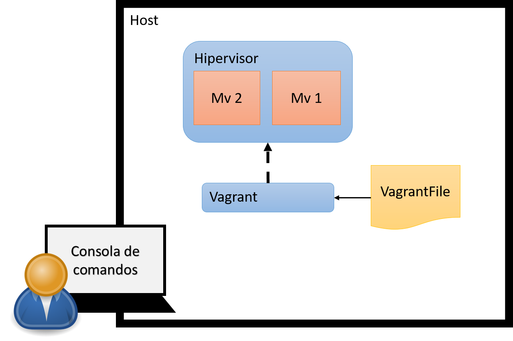

El objetivo de esta practica es que el alumno se familiarice con la herramienta Vagrant para la automatización de tareas de administración de plataformas de virtualización. Con este fin se proponen la realización de las siguientes tareas:
Instalación de Vagrant.
Creación de máquinas virtuales con Vagrant y VirtualBox.
Personalización de MVs con Vagrant.
Creación de escenarios de MVs con Vagrant
Vagrant es una aplicación libre desarrollada en ruby que nos permite crear y personalizar entornos de desarrollo livianos, reproducibles y portables. Vagrant nos permite automatizar la creación y gestión de máquinas virtuales.
Las máquinas virtuales creadas por Vagrant se pueden ejecutar con distintos gestores de máquinas virtuales (VirtualBox, VMWare, KVM,…)
El objetivo principal de Vagrant es aproximar los entornos de desarrollo y producción, de esta manera el desarrollador tiene a su disposición una manera muy sencilla de desplegar una infraestructura similar a la que se va a tener en entornos de producción. A los administradores de sistemas les facilita la creación de infraestrucutras de prueba y desarrollo.
Vagrant es una aplicación que se instala dentro de un host (o máquina que aloja en su interior varias máquinas virtuales con la ayuda de un hipervisor), e interacciona con el hipervisor (o proveedor) para arrancar, gestionar o parar un conjunto de máquinas virtuales (escenario) definido por un archivo de texto (Vagrantfile). Para operar con Vagrant el administrador tendrá que abrir una consola de comandos en el propio host e interaccionar via comandos de texto. Para abrir una consola de comandos:

La documentación de Vagrant está accesible en: https://www.vagrantup.com/docs/
Vagrant está instalado por defecto en las máquinas de los laboratorios de prácticas. Si va a trabajar este boletín en su ordenador, es posible instalarlo para cualquier sistema operativo Windows, MacOS o Linux, desde https://www.vagrantup.com/downloads.html.
En sistemas Linux Debian/Ubuntu podemos teclear desde la consola de comandos
apt-get install vagrant para instalar directamente desde los repositorios, incluyendo las dependencias.
La puedse saber qué version ha sido instalada mediante el comando vagrant -v. Por ejemplo, para un host Ubuntu 18.04 es:
$ vagrant -v
Vagrant 2.0.2
Nota: Para obtener la úlitma versión de Vagrant podemos descargarnos el paquete .deb desde https://www.vagrantup.com/downloads.html.
Una alternativa para Debian/Ubuntu es emplear un repositorio PPA no oficial. A continuación se indican los pasos para configurar el repositorio:
$ sudo bash -c 'echo deb https://vagrant-deb.linestarve.com/ any main > /etc/apt/sources.list.d/wolfgang42-vagrant.list'
$ sudo apt-key adv --keyserver hkp://keyserver.ubuntu.com:80 --recv-key AD319E0F7CFFA38B4D9F6E55CE3F3DE92099F7A4 D2BABDFD63EA9ECAB4E09C7228A873EA3C7C705F
$ sudo apt-get update
$ sudo apt-get install vagrant
Un proveedor es, para Vagrant, un entorno de virtualización sobre el cual se va a realizar un despliegue. Por defecto, Vagrant utiliza Virtualbox, aunque es también compatible con KVM/libvirt, HyperV o incluso clouds como AWS o Azure. Por tanto, si es quiere instalar VirtualBox en nuestra máquina (en el caso de que aún no esté instalado):
# apt install virtualbox
Un box es la imagen de una máquina virtual empaquetada. Para crear una máquina virtual, Vagrant clonará un box. Vagrant proporciona boxes oficiales desde https://app.vagrantup.com/boxes/search. Otro sitio con boxes: http://www.vagrantbox.es/
Para poder utilizar un box es necesario agregarlo a nuestro repositorio de boxes, utilizando:
vagrant box add {title} {url}
Podemos obtener una distribución Debian Stretch de 64 bits para ser empleada en nuestro escenario:
$ vagrant box add debian/stretch64
==> box: Loading metadata for box 'debian/stretch64'
box: URL: https://vagrantcloud.com/debian/stretch64
This box can work with multiple providers! The providers that it
can work with are listed below. Please review the list and choose
the provider you will be working with.
1) libvirt
2) virtualbox
Enter your choice: 2
==> box: Adding box 'debian/stretch64' (v9.8.0) for provider: virtualbox
box: Downloading: https://vagrantcloud.com/debian/boxes/stretch64/versions/9.8.0/providers/virtualbox.box
==> box: Successfully added box 'debian/stretch64' (v9.8.0) for 'virtualbox'!
Hemos seleccionado el proveedor de virtualización VirtualBox entre las dos opciones para las que se ofrecen para este box. Esto sólo será necesario si se dispone de múltiples imágenes del box y tenemos instalados localmente varios proveedores de virtualización.
El box se habrá guardado en /home/usuario/.vagrant.d/boxes (en Linux).
Podemos ver la lista de boxes que tenemos en nuestro repositorio con la instrucción:
$ vagrant box list
debian/stretch64 (virtualbox, 9.9.1)
Para configurar las máquinas virtuales se emplea un fichero de configuración Vagranfile. El fichero Vagrantfile describe una o varias instancias para crear un entorno Vagrant en el directorio en el que se este trabajando. Por lo tanto se pueden tener varios Vagranfile en diferentes directorios.
Para crea un Vagrantfile inicial para un proyecto:
$ mkdir entorno
$ cd entorno
~/entorno$ vagrant init debian/stretch64
Una vez que tenemos nuestras máquinas virtuales configuradas, es hora de trabajar con ellas, para ello tenemos varios comandos que vamos a estudiar.
vagrant up: nos permite arrancar las una clonación desde el box, y se realizará la configuración. Si las máquinas ya han sido creadas, pero están suspendidas, se vuelven a arrancar.
Partiendo del ejemplo básico anterior:
~/entorno$ vagrant init debian/stretch64
~/entorno$ vagrant up
Bringing machine 'default' up with 'virtualbox' provider...
==> default: Importing base box 'debian/stretch64'...
==> default: Matching MAC address for NAT networking...
==> default: Checking if box 'debian/stretch64' version '9.9.1' is up to date...
==> default: Setting the name of the VM: entorno_default_1566551246799_97343
==> default: Clearing any previously set network interfaces...
==> default: Preparing network interfaces based on configuration...
default: Adapter 1: nat
==> default: Forwarding ports...
default: 22 (guest) => 2222 (host) (adapter 1)
==> default: Running 'pre-boot' VM customizations...
==> default: Booting VM...
==> default: Waiting for machine to boot. This may take a few minutes...
default: SSH address: 127.0.0.1:2222
default: SSH username: vagrant
default: SSH auth method: private key
default:
default: Vagrant insecure key detected. Vagrant will automatically replace
default: this with a newly generated keypair for better security.
default:
default: Inserting generated public key within guest...
default: Removing insecure key from the guest if it's present...
default: Key inserted! Disconnecting and reconnecting using new SSH key...
==> default: Machine booted and ready!
==> default: Checking for guest additions in VM...
default: No guest additions were detected on the base box for this VM! Guest
default: additions are required for forwarded ports, shared folders, host only
default: networking, and more. If SSH fails on this machine, please install
default: the guest additions and repackage the box to continue.
default:
default: This is not an error message; everything may continue to work properly,
default: in which case you may ignore this message.
==> default: Installing rsync to the VM...
==> default: Rsyncing folder: /home/CIMSIusr/entorno/ => /vagrant
==> default: Machine 'default' has a post `vagrant up` message. This is a message
==> default: from the creator of the Vagrantfile, and not from Vagrant itself:
==> default:
==> default: Vanilla Debian box. See https://app.vagrantup.com/debian for help and bug reports
Comprobamos como crea la máquina virtual utilizando VirtualBox como proveedor y realizando la configuración indicada en el fichero Vagrantfile.
Para acceder a las máquinas por ssh podemos utilizar la instrucción vagrant ssh donde indicamos el nombre de la máquina donde queremos acceder.
CIMSIusr@ubuntu1804:~/entorno$ vagrant ssh
Linux stretch 4.9.0-9-amd64 #1 SMP Debian 4.9.168-1+deb9u2 (2019-05-13) x86_64
The programs included with the Debian GNU/Linux system are free software;
the exact distribution terms for each program are described in the
individual files in /usr/share/doc/*/copyright.CIMSIusr@ubuntu1804:~/entorno$ vagrant halt
==> default: Attempting graceful shutdown of VM...
Debian GNU/Linux comes with ABSOLUTELY NO WARRANTY, to the extent
permitted by applicable law.
vagrant@stretch:~$
Para terminar la sesión ssh podemos emplear CTRL+D o emplear el comando logout para finalizar la shell:
vagrant@stretch:~$ logout
Connection to 127.0.0.1 closed.
CIMSIusr@ubuntu1804:~/entorno$
Para detener el escenario sin destruir las máquinas virtualdes podemos emplear vagrant halt:
CIMSIusr@ubuntu1804:~/entorno$ vagrant halt
==> default: Attempting graceful shutdown of VM...
Y volver a ejecutarlo partiendo de las máquiinas creadas:
CIMSIusr@ubuntu1804:~/entorno$ vagrant up
Bringing machine 'default' up with 'virtualbox' provider...
==> default: Checking if box 'debian/stretch64' version '9.9.1' is up to date...
==> default: Clearing any previously set forwarded ports...
==> default: Clearing any previously set network interfaces...
==> default: Preparing network interfaces based on configuration...
default: Adapter 1: nat
==> default: Forwarding ports...
default: 22 (guest) => 2222 (host) (adapter 1)
==> default: Running 'pre-boot' VM customizations...
==> default: Booting VM...
==> default: Waiting for machine to boot. This may take a few minutes...
default: SSH address: 127.0.0.1:2222
default: SSH username: vagrant
default: SSH auth method: private key
==> default: Machine booted and ready!
==> default: Checking for guest additions in VM...
default: No guest additions were detected on the base box for this VM! Guest
default: additions are required for forwarded ports, shared folders, host only
default: networking, and more. If SSH fails on this machine, please install
default: the guest additions and repackage the box to continue.
default:
default: This is not an error message; everything may continue to work properly,
default: in which case you may ignore this message.
==> default: Rsyncing folder: /home/CIMSIusr/entorno/ => /vagrant
==> default: Machine already provisioned. Run `vagrant provision` or use the `--provision`
==> default: flag to force provisioning. Provisioners marked to run always will still run.
==> default: Machine 'default' has a post `vagrant up` message. This is a message
==> default: from the creator of the Vagrantfile, and not from Vagrant itself:
==> default:
==> default: Vanilla Debian box. See https://app.vagrantup.com/debian for help and bug reports
Si queremos destruir completamente el escenario, incluyendo las máquinas virtuales, ejecutamos vagrant destroy:
CIMSIusr@ubuntu1804:~/entorno$ vagrant destroy
default: Are you sure you want to destroy the 'default' VM? [y/N] y
==> default: Forcing shutdown of VM...
==> default: Destroying VM and associated drives...
En el fichero Vagrantfile podemos indicar la configuración de varias máquinas virtuales, las opciones más comunes que podemos configurar son las siguientes:
vm.box: con esta opción elegimos el box de nuestro repositorio del que se va a crear la máquina virtual.
Por ejemplo:
config.vm.box = "debian/stretch64"vm.hostname: indicamos el nombre de la máquina virtual. Es recomendable que si vamos a trabajar con varias máquinas virtuales, le asignemos un nombre significativo.
Por ejemplo:
config.vm.hostname = "debian_redes"vm.network: nos permite indicar la configuración de red de la máquina virtual.
Algunos ejemplos:
config.vm.network :public_network,:bridge=>"eth0"
Configura una tarjeta de red en modo Adaptador puente de VirtualBox, indicando la interfaz de red que usa en el anfitrión para ello.
config.vm.network :private_network, ip: "172.22.100.3"
Configura una tarjeta de red en modo Red interna de VirtualBox, indicando la ip que va a tener la máquina.
config.vm.network :private_network, type: "dhcp"
Configura una tarjeta de red en modo Red interna de VirtualBox, indicando que la ip se va a obtener automáticamente mediante DHCP.
En la documentación oficial de Vagrant hay más ejemplos para configurar la cantidad de memoria RAM, el número de núcleos del procesador asignados a cada máquina, etc.
Para crear un escenario complejo podemos utilizar el fichero de configuración Vagrantfile para configurar simultáneamente varias máquinas virtuales. Suponiendo un escenario con dos nodos conectados a una red privada común, el fichero Vagrantfile quedaría como sigue:
# vi: set ft=ruby :
Vagrant.configure("2") do |config|
config.vm.define :nodo1 do |nodo1|
nodo1.vm.box = "debian/stretch64"
nodo1.vm.hostname = "nodo1"
nodo1.vm.network :private_network, ip: "10.1.1.101"
end
config.vm.define :nodo2 do |nodo2|
nodo2.vm.box = "debian/stretch64"
nodo2.vm.hostname = "nodo2"
nodo2.vm.network :private_network, ip: "10.1.1.102"
end
end
Para acceder a una máquina virtual concreta a través de ssh:
CIMSIusr@ubuntu1804:~/entorno2$ vagrant ssh nodo1
Linux nodo1 4.9.0-9-amd64 #1 SMP Debian 4.9.168-1+deb9u2 (2019-05-13) x86_64
The programs included with the Debian GNU/Linux system are free software;
the exact distribution terms for each program are described in the
individual files in /usr/share/doc/*/copyright.
Debian GNU/Linux comes with ABSOLUTELY NO WARRANTY, to the extent
permitted by applicable law.
You have new mail.
vagrant@nodo1:~$
Para detener una máquina concreta y volverla a configurar:
CIMSIusr@ubuntu1804:~/entorno2$ vagrant halt nodo1
==> nodo1: Attempting graceful shutdown of VM...
CIMSIusr@ubuntu1804:~/entorno2$ vagrant up nodo1
Bringing machine 'nodo1' up with 'virtualbox' provider...
==> nodo1: Checking if box 'debian/stretch64' version '9.9.1' is up to date...
==> nodo1: Clearing any previously set forwarded ports...
==> nodo1: Clearing any previously set network interfaces...
. . .
Para destruir el escenario, liberando los recursos:
CIMSIusr@ubuntu1804:~/entorno2$ vagrant destroy
nodo2: Are you sure you want to destroy the 'nodo2' VM? [y/N] y
==> nodo2: Forcing shutdown of VM...
==> nodo2: Destroying VM and associated drives...
nodo1: Are you sure you want to destroy the 'nodo1' VM? [y/N] y
==> nodo1: Forcing shutdown of VM...
==> nodo1: Destroying VM and associated drives...
host only para que se pueda comunicar con el exterior. Puede modificar la
configuración de la máquina para que se instale Apache desde el VagrantFile, o puede instalarlo una vez que haya puesto la máquina en marcha. Otra opción es descargarse un box con Apache ya instalado ( puede encontrarlo en https://app.vagrantup.com/boxes/search).
sudo apt updateping.
private network en sus máquinas, y con el navegador web de su host (deshabilite el proxy de su navegador), le da como URL la dirección ip de la máquina virtual que quiere comprobar. Use el comando ifconfig para ver las ips de cada uno de los adaptadores de la máquina virtual.Esta práctica funciona mejor usando Ubuntu como host en las máquinas de la ETSII. Si se utiliza Windows, se necesitan permisos de administración para poder levantar las interfaces de red de las máquinas virtuales.